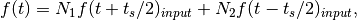
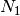
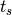
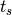

DoublePulseFit dialog.
Table of Contents
| Name | Direction | Type | Default | Description |
|---|---|---|---|---|
| Function | InOut | Function | Mandatory | Parameters defining the fitting function and its initial values |
| InputWorkspace | Input | Workspace | Mandatory | Name of the input Workspace |
| IgnoreInvalidData | Input | boolean | False | Flag to ignore infinities, NaNs and data with zero errors. |
| DomainType | Input | string | Simple | The type of function domain to use: Simple, Sequential, or Parallel. Allowed values: [‘Simple’, ‘Sequential’, ‘Parallel’] |
| EvaluationType | Input | string | CentrePoint | The way the function is evaluated on histogram data sets. If value is “CentrePoint” then function is evaluated at centre of each bin. If it is “Histogram” then function is integrated within the bin and the integrals returned. Allowed values: [‘CentrePoint’, ‘Histogram’] |
| PeakRadius | Input | number | 0 | A value of the peak radius the peak functions should use. A peak radius defines an interval on the x axis around the centre of the peak where its values are calculated. Values outside the interval are not calculated and assumed zeros.Numerically the radius is a whole number of peak widths (FWHM) that fit into the interval on each side from the centre. The default value of 0 means the whole x axis. |
| Ties | Input | string | Math expressions defining ties between parameters of the fitting function. | |
| Constraints | Input | string | List of constraints | |
| MaxIterations | Input | number | 500 | Stop after this number of iterations if a good fit is not found |
| OutputStatus | Output | string | Whether the fit was successful | |
| OutputChi2overDoF | Output | number | Returns the goodness of the fit | |
| Minimizer | Input | string | Levenberg-Marquardt | Minimizer to use for fitting. Allowed values: [‘BFGS’, ‘Conjugate gradient (Fletcher-Reeves imp.)’, ‘Conjugate gradient (Polak-Ribiere imp.)’, ‘Damped GaussNewton’, ‘FABADA’, ‘Levenberg-Marquardt’, ‘Levenberg-MarquardtMD’, ‘Simplex’, ‘SteepestDescent’, ‘Trust Region’] |
| CostFunction | InOut | string | Least squares | The cost function to be used for the fit, default is Least squares. Allowed values: [‘Least squares’, ‘Poisson’, ‘Rwp’, ‘Unweighted least squares’] |
| CreateOutput | Input | boolean | False | Set to true to create output workspaces with the results of the fit(default is false). |
| Output | Input | string | A base name for the output workspaces (if not given default names will be created). The default is to use the name of the original data workspace as prefix followed by suffixes _Workspace, _Parameters, etc. | |
| CalcErrors | Input | boolean | False | Set to true to calcuate errors when output isn’t created (default is false). |
| OutputCompositeMembers | Input | boolean | False | If true and CreateOutput is true then the value of each member of a Composite Function is also output. |
| ConvolveMembers | Input | boolean | False | If true and OutputCompositeMembers is true members of any Convolution are output convolved with corresponding resolution |
| OutputParametersOnly | Input | boolean | False | Set to true to output only the parameters and not workspace(s) with the calculated values (default is false, ignored if CreateOutput is false and Output is an empty string). |
| PulseOffset | Input | number | 0 | The time offset between the two pulses |
| FirstPulseWeight | Input | number | 0.5 | Weighting of first pulse. |
| SecondPulseWeight | Input | number | 0.5 | Weighting of second pulse. |
This algorithm is is designed to analyse double pulse Muon data. It fits two copies of the input function seperated by a time offset. The function fitted is of the form

where  is the FirstPulseWeight,  is the SecondPulseWeight and  is the PulseOffset. The corresponding parameters of the two input functions are tied to have the same value. In practise this is achieved by taking a convolution of two delta functions with the input function;
is the SecondPulseWeight and  is the PulseOffset. The corresponding parameters of the two input functions are tied to have the same value. In practise this is achieved by taking a convolution of two delta functions with the input function;

With the exception of the three new parameters PulseOffset, FirstPulseWeight and SecondPulseWeight the interface for DoublePulseFit is identical to that of Fit and the two can be used interchangeably. The function output by this algorithm corrospond to the inner function only whilst the output fit curves corrospond to the full function.
import numpy as np
from mantid.simpleapi import DoublePulseFit, CreateWorkspace, GausOsc, Fit
from mantid.api import FunctionFactory, AnalysisDataService
# Create a workspace with two offset oscillations
delta = 0.33
x = np.linspace(0.,15.,100)
x_offset = np.linspace(delta/2, 15. + delta/2, 100)
x_offset_neg = np.linspace(-delta/2, 15. - delta/2, 100)
testFunction = GausOsc(Frequency = 1.5, A=0.22)
y1 = testFunction(x_offset_neg)
y2 = testFunction(x_offset)
y = y1/2+y2/2
ws = CreateWorkspace(x,y)
# Create functions to fit
convolution = FunctionFactory.createCompositeFunction('Convolution')
innerFunction = FunctionFactory.createInitialized('name=GausOsc,A=0.2,Sigma=0.2,Frequency=1,Phi=0')
deltaFunctions = FunctionFactory.createInitialized('(name=DeltaFunction,Height=0.5,Centre={},ties=(Height=0.5,Centre={});name=DeltaFunction,Height=0.5,Centre={},ties=(Height=0.5,Centre={}))'.format(-delta/2, -delta/2, delta/2, delta/2))
convolution.setAttributeValue('FixResolution', False)
convolution.add(innerFunction)
convolution.add(deltaFunctions)
innerFunctionSingle = FunctionFactory.createInitialized('name=GausOsc,A=0.2,Sigma=0.2,Frequency=1,Phi=0')
DoublePulseFit(Function=innerFunctionSingle, InputWorkspace=ws, PulseOffset = delta, StartX=0.0, EndX=15.0, Output='DoublePulseFit')
Fit(Function=convolution, InputWorkspace=ws, CreateOutput = True, StartX=0.0, EndX=15.0, Output='Fit')
double_parameter_workspace = AnalysisDataService.retrieve('DoublePulseFit_Parameters')
double_col_values = double_parameter_workspace.column(1)
single_parameter_workspace = AnalysisDataService.retrieve('Fit_Parameters')
col_values = single_parameter_workspace.column(1)
print('Fitted value of A from DoublePulseFit is {:.2g}'.format(double_col_values[0]))
print('Fitted value of Frequency from DoublePulseFit is {:.2g}'.format(double_col_values[2]))
print('Fitted value of A from Fit is {:.2g}'.format(col_values[0]))
print('Fitted value of Frequency from Fit is {:.2g}'.format(col_values[2]))
Output:
Fitted value of A from DoublePulseFit is 0.22
Fitted value of Frequency from DoublePulseFit is 1.5
Fitted value of A from Fit is 0.22
Fitted value of Frequency from Fit is 1.5

Categories: AlgorithmIndex | Optimization
C++ header: DoublePulseFit.h (last modified: 2020-07-23)
C++ source: DoublePulseFit.cpp (last modified: 2020-07-23)